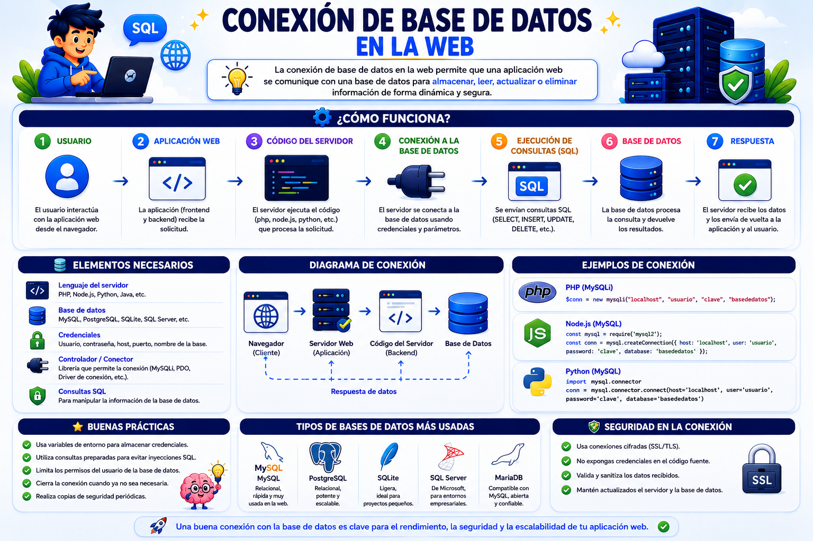

Tema VI
Para desplegar un sistema web dinámico en producción desde cPanel, se debe configurar una base de datos relacional MySQL siguiendo un estricto orden secuencial:
Creación de la Base de Datos: Acceder al módulo Bases de datos MySQL en cPanel y asignarle un nombre único al contenedor de datos.
Creación del Usuario de la Base de Datos: En la misma sección, generar un usuario específico para esa base de datos y definir una contraseña de alta seguridad.
Asociación y Privilegios: Vincular el usuario creado con la base de datos correspondiente, otorgándole explícitamente los privilegios de ejecución requeridos (SELECT, INSERT, UPDATE, DELETE, CREATE, DROP).
Administración Gráfica: Utilizar la herramienta integrada phpMyAdmin para crear tablas, importar esquemas .sql externos o gestionar registros de forma visual.
Las aplicaciones dinámicas (programadas en lenguajes del lado del servidor como PHP) requieren un script de inicialización para conectarse al motor de MySQL empleando cuatro parámetros de configuración obligatorios:
Host (Servidor): Generalmente se define como localhost si el script web y la base de datos residen físicamente en el mismo servidor. Si la base de datos se encuentra en un servidor externo, se ingresa su IP o dominio correspondiente.
Nombre de la Base de Datos: El identificador exacto de la base de datos configurada en el panel.
Usuario: El nombre del usuario con privilegios asociado previamente.
Contraseña: La clave secreta del usuario de la base de datos.
Ejemplo técnico de conexión en PHP moderno (Usando PDO - PHP Data Objects):
